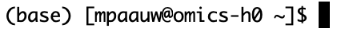

Click me to see the answer
# 1. Yes, I see the MDA folder now!
ls
# 2. Let's navigate into it
cd MDA/
# 3. This should print confirmation that you are now in MDA
pwd
# 4. This folder should be empty
ls
# 5.
mkdir intro-to-cli
cd intro-to-cli/During the setup, you already ran some first commands. In this episode, we will learn a handful of very useful basic unix commands to navigate your filesystem, to move around files, and to inspect the content of files. If you’re logged in to the head node, you should see something like this:

It shows your user name (mpaauw), the name of the node we are connected to (omics-h0), and after the $ sign, a blinking cursor. That’s where we will start typing commands to interact with the filesystem.
pwd: find out where we areLet’s orient ourselves by typing our first command, pwd, into the terminal, and pressing enter.
pwd prints the location of the current working directory and tells you where exactly you are in the file system. In my case, this prints /home/mpaauw as output.
ls: list the contents of a directoryNow that we know where we are, let’s find out what files and folders exist in our home directory. For this, you can use the ls command, which lists the contents of the directory you are currently in:
If you set-up you Crunchomics account correctly, you should see a folder called personal. That’s where you can store up to 500GB of data on Crunchomics. Try adding the following modifier, or flag, to the ls command to change the output format:
cd: moving between directoriesTo be able to use the personal directory, we have to move in there. The command cd exists to do just that. Essentially, it’s equivalent to clicking on a directory in the file navigation system on your own computer.
Let’s verify that we actually ended up in this personal folder:
Should now print /home/mpaauw/personal.
You can move back ‘up’ in the hierarchy of directories by running:
mkdir: make new foldersWe can also make new folders. Let’s navigate into personal again, and create a folder that will contain all the code and data for the Molecular Data Analysis module. We’ll abbreviate it to MDA.
MDA directory was created.MDA directory.MDA directory.MDA, create another directory, called intro-to-cli, and navigate into it.wget: download dataNext, let’s download some sequencing data. We will use the wget command to download some sequencing data from a repository, into the currect working directory.
wget https://github.com/mishapaauw/molecular-data-analysis/blob/main/part0-setup/data/sample1.fastq.gzAs always, verify that your file arrived by running ls.
cp: copying dataWhen doing bioinformatics projects, a clear folder structure is essential to keep yourself organized. We will copy the data to a new folder that we call data.
You should see that we now have two copies of the .fastq data. One file is in the working directory, and the other one is in the data folder. Notice that we added a flag, or option, to the ls command: -l. This specifies that the output is now presented in a list format.
rm: remove files and foldersWe only need one copy of the data: let’s remove the sequencing data that is now stored in our working directory with a new command rm.
Unix does not have an undelete command, a trash can, or a bin
This means that if you delete something with rm, it’s gone. Therefore, use rm with care and check what you write twice before pressing enter!
history: keeping track of what you didThe history command is quite useful: it keeps a list of all the commands that you used today. You can view this as a simple automated labjournal, although it does not contain any output, or information whether a command worked at all.
data folder as well.history to find back the command to download the data.mv) the data to the data folder.ls commands to inspect what happened by using mv rather than cp.# 1. Oh no, I removed my raw data!
rm data/sample1.fastq.gz
# 2. Ah, I remember, it was the wget command.
history
# 3. Let's download again, and this time move it instead of copy
wget https://github.com/mishapaauw/molecular-data-analysis/raw/refs/heads/main/part0-setup/data/sample1.fastq.gz
mv sample1.fastq.gz data/
# 4. Now we only have one copy of the data, in the data folder.
ls -l
ls -l data/Instead of retyping commands, you can also press the arrow ‘up’ key to cycle through commands you already ran before.
gunzip: uncompress filesYou may have noticed that the file with sequencing data has.gz as file extension. This means that the file is compressed, or zipped. This saves storage space. While many bioinformatics tools can deal with compressed files, we will uncompress it to be able to inspect the file.
This should now show that you have a single file in the data/ folder: sample1.fastq.
head, tail, and cat: inspecting the contents of a fileMany bioinformatics files, including .fastq files, are essentially just text files. We will learn a few more command to inspect files on the terminal. After all, we can’t just open them in Notepad.
head: view the first 10 rows of a filetail: view the first 10 rows of a filecat: view the full fileWarning! Your terminal will just print everything if you ask it to. If your file is huge, this may take a while. If you’re stuck in such a situation, you can always hits control + C to break out of it.
grep: searching thingsEach read is represented by four rows in a .fastq file. First, there’s the read header (or name, if you want). Then, there’s the actual sequence. Finally, there’s a spacer row and a row with quality encoding (more on that in a later episode!). Let’s say we are only interested in the read name and their sequence at this point. We can use grep to search for patterns (much like you’d use control + F in a Word file on your computer!).
As you may have seen, each read name starts with @ERR. We can use that to search:
And voila, we get just the read headers printed to our terminal.
We can also ask grep to report the first line after a search hit by adding the -A 1 option (likewise, we could ask for a line before a search hit: -B 1).
wc: counting thingsWe might be interested in the number of reads in our .fastq file. We know now that each read takes four rows; if we could find out the number of rows we could calculate the number of reads! The wc (word count) command does just that, if we specify that we are interested in lines (-l).
Okay, there are 200,000 rows. So there must be 50,000 reads in this dataset!
| and >: creating litle pipelinesIt would be nice to find out the number of reads in a dataset without having to do a manual calculation. We have the tools to do so: we could grep for @ERR, giving us a list of just the read headers, and then count the number of lines using wc -l. We just need to learn how to string them together. In command-line interfaces, this is called ‘piping’ and is done with the | symbol. Let’s try.
50,000! This command directly prints the answer to your terminal. What happens is that the list of read headers is redirected into the wc -l command, instead of being printed to the terminal.
We can add one more step to this pipeline and save this number to a file to keep for later reference:
seqkit: sequence file manipulationWe can do a lot with a small set of basic terminal commands, but luckily, people have developed tools to make working with sequencing files easier. One of such tools is seqkit, which has numerous ‘sub-commands’.
This confirms that we have 50,000 sequences, and additionaly, we learn that the reads are 101 basepairs long.
Sometimes, sequencing reads can still contain the adapter sequences that are ligated to the DNA molecules before sequencing. A fragment of the Illumina TruSeq adapter that you might find is AGATCGGAAGAGC. Since these fragments do not contain biological information, reads with adapter fragments are considered ‘contaminated’ and should be cleaned or removed.
grep. How many times do find the adapter sequence in this dataset? And where do you find the adapters in the reads?grep command.| these results into a new command to just get the headers and get rid of the sequences.@ sign until the first space. Hint: you will need the cut command, which we have not yet learned. Use man cut to read the official documentation, or search online.contaminated_reads.txt.seqkit can be used to filter reads by average quality scores. Run the following command: seqkit seq --min-qual 25 data/sample1.fastq.
sample1-HQ-reads.fastqseqkit stats data/sample1*.fastq. Discuss with your neighbour what the * character is doing in this command.seqkit stats data/sample1*.fastq
processed files: 2 / 2 [======================================] ETA: 0s. done
file format type num_seqs sum_len min_len avg_len max_len
data/sample1.fastq FASTQ DNA 50,000 5,050,000 101 101 101
data/sample1-HQ.fastq FASTQ DNA 38,416 3,880,016 101 101 101
# It looks like the wildcard helped seqkit to find both fastq files! That’s it for today. You just learned a handful of commands to work in a command-line environment. Although the commands are simple, combining them into small pipelines they can become very powerful tools to manipulate and analyze text files. In the following tutorials, we will start learning more specialized bioinformatics commands.
Materials for this episode were strongly inspired by, and partly copied from, Nina Dombrowski’s ‘Introduction to the cli’ tutorial.